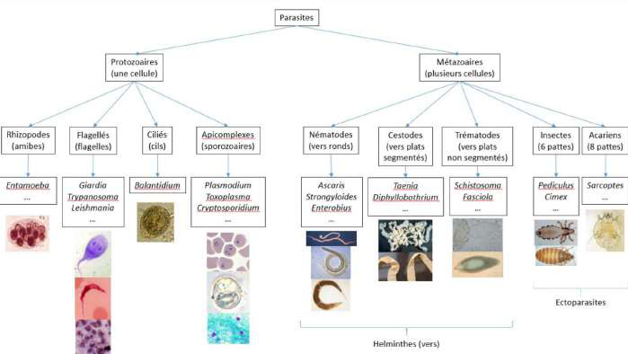
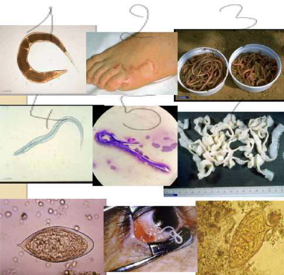
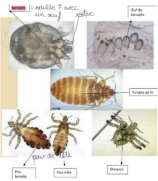
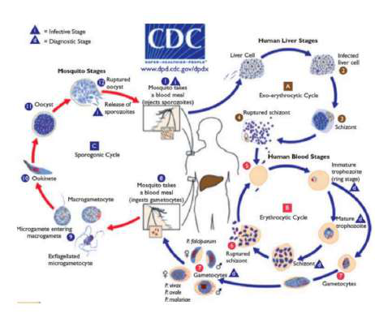

Les parasites et champignons sont des eucaryotes (noyau, mitochondries), contrairement aux bactéries qui sont des procaryotes (pas de noyau, pas de mitochondries). Leur unité cellulaire ressemble à celle du corps humain.
Définition du parasite : être vivant (animal ou champignon) qui, pendant une partie ou la totalité de son existence, vit aux dépens d'autres êtres organisés (les hôtes).
| Mode de vie | Définition | Exemple |
|---|---|---|
| Vie libre | L'organisme subvient par lui-même à ses besoins métaboliques | — |
| Saprophytisme | Se nourrit de matières organiques ou végétales en décomposition dans le milieu extérieur | — |
| Commensalisme | Se nourrit de matières organiques sur un être vivant (milieu buccal, intestin) sans entraîner de troubles chez l'hôte | Bactéries commensales de l'intestin |
| Symbiose | Les 2 êtres vivent en étroite collaboration, association bénéfique aux deux parties | Équilibre des flores intestinales / vaginales |
| Parasitisme | Le parasite vit aux dépens d'un hôte qui lui fournit biotope et/ou nutriments ; l'hôte en pâtit de façon plus ou moins grave | (voir groupes ci-dessous) |
| Caractéristiques | |
|---|---|
| Parasitisme | Équilibre parfois fragile entre le parasite et son hôte, indispensable à sa survie. Il n'y a pas forcément mort de l'hôte. |
| Opportunisme | Passage possible d'une forme saprophyte (non délétère) à une étape parasitaire virulente quand l'hôte perd ses défenses immunitaires (VIH, corticoïdes, immunosuppresseurs…) |
Très grande diversité !
| Type | Définition | Exemple |
|---|---|---|
| Permanents | Existence entière dans un ou plusieurs hôtes | Tænia (« ver solitaire ») : toute sa vie dans l'intestin, ne survit pas hors du corps humain |
| Temporaires | Alternent formes libres dans l'environnement et formes parasitaires | Douves, anguillules (l'anguillule donne l'anguillulose, ~250 µm) |
| Facultatifs | Vie saprophytique mais occasionnellement parasitaire | Myiases : larve/asticot de mouche pondu sous la peau → furoncle |
| Spécificité | Définition | Exemples |
|---|---|---|
| Sténoxènes | Étroitement inféodés à un seul hôte | Poux (chaque pou parasite spécifiquement une espèce), hématozoaires (parasites du sang, ex : paludisme) |
| Euryxènes | Faible spécificité : parasitoses communes à l'homme et aux animaux | Distomatoses (Fasciola hepatica, douve du foie — humains, bovins, ovins…), hydatidose |

Êtres eucaryotes unicellulaires doués de mouvement.
| Groupe (4) | Mobilité | Exemples |
|---|---|---|
| Rhizopodes / Amibes | Pseudopodes (déplacement très lent), incorporent leurs organites. Majorité dans l'intestin. | Entamoeba histolytica — 3e parasitose en mortalité dans le monde (phagocyte les hématies) |
| Flagellés | Flagelle(s) | Giardia intestinalis · Trypanosoma brucei (maladie du sommeil, mouche tsé-tsé) · Leishmania · Trichomonas vaginalis (vaginites, leucorrhées malodorantes) · Dientamoeba fragilis |
| Ciliés | Cils (font du surplace) | Balantidium coli (seul représentant) |
| Apicomplexes | Mobilité sur eux-mêmes (intracellulaires +++) | Plasmodium (dans les GR) · Toxoplasma gondii (toxoplasmose) · Cryptosporidium (parmi les + petits, 2–3 µm) |
Êtres eucaryotes pluricellulaires possédant des tissus différenciés (bouche, œsophage, tube digestif, équivalent de muscles…). Sous formes adultes des deux sexes ou hermaphrodite ; sous formes larvaire, embryonnaire ou ovulaire.
2 grands groupes : les vers (Helminthes) et les arthropodes (insectes & acariens).
| Classe | Description | Exemples |
|---|---|---|
| Nématodes | Vers ronds (coupe axiale, « comme un serpent ») | Ascaris (le + gros nématode infestant l'Homme, 20–25 cm) · Strongyloides = anguillule (anguillulose) · Enterobius = oxyure |
| Cestodes | Vers plats segmentés, hermaphrodites | Taenia / ver solitaire · Diphyllobothrium (+ grand parasite pouvant nous infecter) |
| Trématodes | Vers plats non segmentés | Schistosoma (bilharzioses) · Fasciola |

Identification difficile vu la diversité. Ectoparasites = en dehors du corps humain.
| Reconnaissance | Exemples | |
|---|---|---|
| Insectes | 6 pattes (3 paires) + corps en 3 parties (tête, thorax d'où partent les pattes, abdomen) ; ailes ou non | Pediculus humanus capitis (poux) · Cimex lectularius (punaise de lit) · morpion (poux de pubis) |
| Acariens | 8 pattes + corps globuleux en une seule partie | Sarcoptes scabiei → gale (prurit surtout la nuit) |

Règne à part entière mais à comportement parasitaire. Champignons microscopiques, sous forme de spores (isolées ou regroupées) et de filaments (libres ou tissulaires).
| Type | Reconnaissance | Exemples |
|---|---|---|
| Levures | Reconnaissables à leurs bourgeons | Candida albicans (fréquent ++) · Cryptococcus neoformans → méningite de l'immunodéprimé |
| Filamenteux | Filaments / spores | Aspergillus fumigatus (tête de spores + conidiophore) · dermatophytes (teigne : spores contaminant les cheveux, qui tombent) |
| Hôte | Définition |
|---|---|
| Hôte définitif (HD) | Héberge les formes adultes assurant la reproduction du parasite |
| Hôte intermédiaire (HI) | « Hôte de passage » : le parasite doit obligatoirement y séjourner pour modifier son apparence avant de devenir infestant pour le HD |
| — HI actif | Transformateur incontournable : multiplication (polyembryonie), maturation (anophèles, mollusques), ou les deux (trypanosomes & tsé-tsé) |
| — HI passif | Abrite la forme infestante jusqu'à un passage accidentel chez le HD ; pas de transformation (cresson sauvage & fasciolose) |
| Vecteur | Arthropode hématophage (insecte ou acarien) assurant une transmission biologique active d'un pathogène |
Le cycle = les différentes étapes de l'évolution du parasite dans l'environnement et dans le corps humain ou l'hôte intermédiaire (ensemble du milieu géophysique et humain adéquat à sa formation).

(Les modes d'infestation ne sont pas commentés en détail dans le cours.)
| Diagnostic | Principe & méthodes |
|---|---|
| Direct | Prélèvement avec mise en évidence du parasite. Prélèvements : sang, selles, urines, LBA, LCR… → observation entre lame et lamelle au microscope, puis techniques de concentration (↑ la quantité de parasites retrouvés). (Inoculation à l'animal et xéno-diagnostic abandonnés.) |
| Indirect | Mise en évidence des réactions de l'hôte = recherche des anticorps dirigés contre le parasite. 2 techniques les plus utilisées : ELISA et Western blot. |